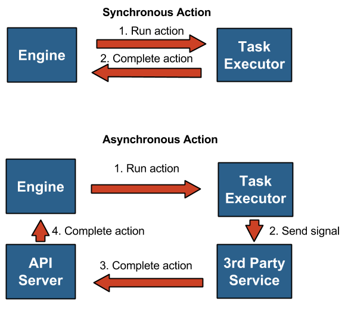

How to work with asynchronous actions¶
Concept¶
During a workflow execution Mistral eventually runs actions. Action is a particular function (or a piece of work) that a workflow task is associated to.
Actions can be synchronous and asynchronous.
Synchronous actions are actions that get completed without a 3rd party, i.e. by Mistral itself. When Mistral engine schedules to run a synchronous action it sends its definition and parameters to Mistral executor, then executor runs it and upon its completion sends a result of the action back to Mistral engine.
In case of asynchronous actions executor doesn’t send a result back to Mistral. In fact, the concept of asynchronous action assumes that a result won’t be known at a time when executor is running it. It rather assumes that action will just delegate actual work to a 3rd party which can be either a human or a computer system (e.g. a web service). So an asynchronous action’s run() method is supposed to just send a signal to something that is capable of doing required job.
Once the 3rd party has done the job it takes responsibility to send result of the action back to Mistral via Mistral API. Effectively, the 3rd party just needs to update the state of corresponding action execution object. To make it possible it must know corresponding action execution id.
It’s worth noting that from Mistral engine perspective the schema is essentially the same in case of synchronous and asynchronous actions. If action is synchronous, then executor immediately sends a result back with RPC mechanism (most often, a message queue as a transport) to Mistral engine after action completion. But engine itself is not waiting anything proactively, its architecture is fully on asynchronous messages. So in case of asynchronous action the only change is that executor is not responsible for sending action result, something else takes over.
Let’s see what we need to keep in mind when working with asynchronous actions.
How to¶
Currently, Mistral comes with one asynchronous action out of the box, “mistral_http”. There’s also “async_noop” action that is also asynchronous but it’s mostly useful for testing purposes because it does nothing. “mistral_http” is an asynchronous version of action “http” sending HTTP requests. Asynchrony is controlled by action’s method is_sync() which should return True for synchronous actions and False for asynchronous.
Let’s see how “mistral_http” action works and how to use it step by step.
We can imagine that we have a simple web service playing a role of 3rd party system mentioned before accessible at http://my.webservice.com. And if we send an HTTP request to that url then our web service will do something useful. To keep it simple, let’s say our web service just calculates a sum of two numbers provided as request parameters “a” and “b”.
1. Workflow example¶
--- version: '2.0' my_workflow: tasks: one_plus_two: action: mistral_http url=http://my.webservice.com input: params: a: 1 b: 2
So our workflow has just one task “one_plus_two” that sends a request to our web service and passes parameters “a” and “b” in a query string. Note that we specify “url” right after action name but “params” in a special section “input”. This is because there’s no one-line syntax for dictionaries currently in Mistral. But both “url” and “params” are basically just parameters of action “mistral_http”.
It is important to know that when “mistral_http” action sends a request it includes special HTTP headers that help identify action execution object. These headers are:
- Mistral-Workflow-Name
- Mistral-Workflow-Execution-Id
- Mistral-Task-Id
- Mistral-Action-Execution-Id
- Mistral-Callback-URL
The most important one is “Mistral-Action-Execution-Id” which contains an id of action execution that we need to calculate result for. Using that id a 3rd party can deliver a result back to Mistral once it’s calculated. If a 3rd party is a computer system it can just call Mistral API via HTTP using header “Mistral-Callback-URL” which contains a base URL. However, a human can also do it, the simplest way is just to use Mistral CLI.
Of course, this is a practically meaningless example. It doesn’t make sense to use asynchronous actions for simple arithmetic operations. Real examples when asynchronous actions are needed may include:
- Analysis of big data volumes. E.g. we need to run an external reporting tool.
- Human interaction. E.g. an administrator needs to approve allocation of resources.
In general, this can be anything that takes significant time, such as hours, days or weeks. Sometimes duration of a job may be even unpredictable (it’s reasonable though to try to limit such jobs with timeout policy in practice). The key point here is that Mistral shouldn’t try to wait for completion of such job holding some resources needed for that in memory.
An important aspect of using asynchronous actions is that even when we interact with 3rd party computer systems a human can still trigger action completion by just calling Mistral API.
2. Pushing action result to Mistral¶
Using CLI:
$ mistral action-execution-update <id> --state SUCCESS --output 3
This command will update “state” and “output” of action execution object with corresponding id. That way Mistral will know what the result of this action is and decide how to proceed with workflow execution.
Using raw HTTP:
POST <Mistral-Callback-URL>/v2/action-executions/<id> { "state": "SUCCESS", "output": 3 }